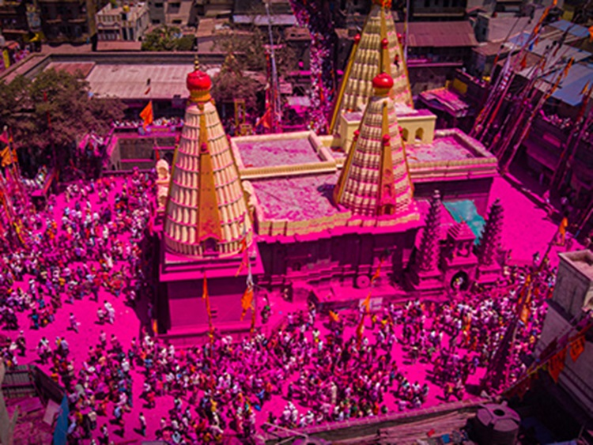

Jotiba Temple
Jyotiba Temple (Marathi: ज्योतिबा) is a holy site of Hinduism near Wadi Ratnagiri in Kolhapur district of Maharashtra state in western India. The deity of the temple is known by the same name. An annual fair takes place on the full moon night of the Hindu months of Chaitra and Vaishakha.
History
Shri Jyotiba or Kedareshvar is incrarnation of Bramha, Vishnu, Mahesh and part of sage Jamadgni's anger, and shine of 12 sun. Legend says Vishnu, Brahma and Shiva came together to incarnate as the deity Jyotiba who eventually destroyed the evil Ratnasura.Jyotiba helped Ambabai in her fight with the demons. He founded his kingdom on this mountain, and belongs to the Nath sampradaya. Lord Jyotiba destroyed Raktabhoja Rakshasa, and Ratnasura Rakshasa thus liberating the region from their tyranny. The idol of Lord Jyotiba is four-armed